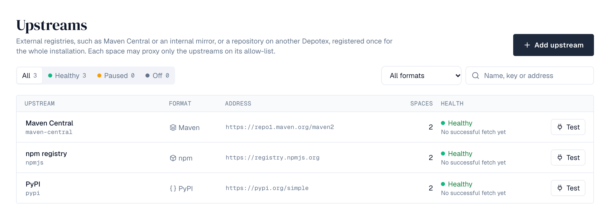
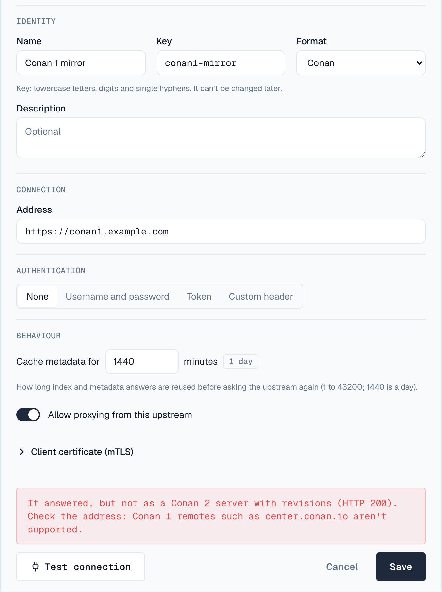
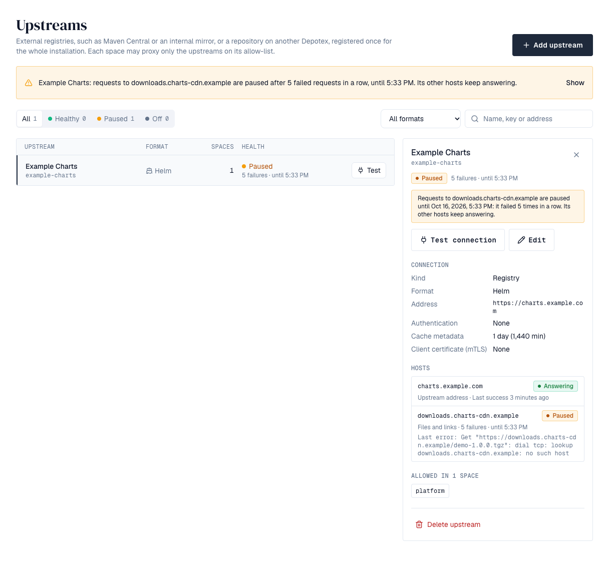

1. Overview
An upstream is an external registry, such as Maven Central, the npm public registry, Docker Hub or your own internal mirror, or a repository on another Depotex installation (a Depotex link). Super admins register each one once for the whole installation under Upstreams in the sidebar, then choose which spaces may proxy it; proxy repositories in those spaces fetch from it. Registries are available on every license tier (proxy repositories need Pro); Depotex links need Enterprise.
2. The upstreams page
Upstreams in the sidebar lists every upstream with its format, address, how many spaces may proxy it and its health: Healthy (with its last successful fetch), Paused after repeated failures, or Off when proxying is turned off. A banner names any paused upstream and when its pause ends; Show filters to it. Filter by health, format (the common formats are always offered), or name, key and address, and choose Test on a row to check it from this server; the result shows under the row. Select a row for its details: health and last error, the connection settings (the metadata cache time in words and minutes), the spaces allowed to proxy it by key (the first 12, then +N more, with a filter when there are more than 20), Test connection, Edit and Delete upstream.

3. Add an upstream
- Start — Choose Add upstream. Pick the kind, Registry or Another Depotex; for a registry, start from Maven Central, npm public registry, Python Package Index, Go module proxy, Bitnami Helm charts, nuget.org or Docker Hub to fill in the details, or enter your own. For a repository on another Depotex, see Depotex link.
- Name and key — The key (lowercase letters, digits, single hyphens) and the format can't be changed later.
- Address — The registry's http or https address, without a username or password in it.
- Client certificate — Optional, for upstreams that require mTLS: paste the certificate and its private key (PEM). The key is stored encrypted and never shown again.
- Authentication — None, Username and password, Token, or Custom header: a header name and value sent with every request, for registries such as GitLab (PRIVATE-TOKEN) or Artifactory (X-JFrog-Art-Api). Credentials are stored encrypted with the installation's encryption key and are never shown again. When editing, leave the field empty to keep them.
- Cache — How long index and metadata answers are reused before asking the upstream again (1 to 43200 minutes; 1440 is a day).
- Test — Test connection checks the address and credentials from this server before you save. It reports the time taken in a notification, or why it failed: not reachable, credentials refused, nothing at that address, an error from the registry, or, for a Conan upstream, not a Conan 2 server (the revisions capability is missing, as on ConanCenter's old Conan 1 address center.conan.io). A failure also stays next to the form, with Test again in its notification.

Turn off Allow proxying from this upstream to pause an upstream without removing it. Deleting an upstream takes it off every space's allow-list.
The test runs from the server you're connected to, and can reach internal addresses (for internal mirrors). In a cluster, check that every server can reach the upstream.
4. Depotex link
A Depotex link proxies a repository of another Depotex installation, for example a central one at headquarters. Files come with their checksums, which are verified. The other installation's quarantine and block list apply here too: a file it refuses is refused here, never served from the cache, and copies cached before it refused them are removed. Needs an Enterprise license on this installation.
- On the other Depotex — Create a service account that can read the repository (a space or repository role, or a content selector), and an application under Settings → Applications whose machine access acts as it. Note its client ID and secret. An API token of an account that can read the repository works too.
- Here — Choose Add upstream, kind Another Depotex (Depotex link). Enter the other Depotex's address (as people open it in a browser), the space key and the repository name there, and the format of that repository.
- Authentication — Choose OAuth application (client credentials) and enter the client ID and secret. Depotex gets short-lived access tokens itself and renews them when they expire or are revoked. Token takes an API token instead.
- Test — Test connection checks that the other Depotex answers, the credentials can read the repository, and its format matches. It says so if the address isn't a Depotex or the formats differ.
- Use it — Allow spaces to proxy the upstream, and create proxy repositories on it like for any registry.
Every 30 minutes the depotex-link-sync job (Settings → Scheduled jobs) asks each linked Depotex about every file cached from it, and removes those it now quarantines or blocks; each removal raises proxy.artifact_withdrawn. Files deleted on the other side stay cached, as with any proxy.
If the license no longer includes Enterprise, files already cached keep being served until they need a re-check, and nothing new is fetched through the link.
The other Depotex serves links at /api/link/v1/ on its usual address, with the same permissions as downloads; it needs no particular license tier. Link traffic counts toward the package-manager rate limit (RATE_LIMIT_BULK).
5. Health
Proxy repositories pause a host that fails five times in a row — first for a minute, then longer, up to an hour — and serve what they have cached from it meanwhile. Each host an upstream uses counts on its own: many registries answer from one host and serve files from another (the Terraform registry's downloads come from releases.hashicorp.com, PyPI's from files.pythonhosted.org), so when only the file host fails, just downloads from it are paused while version lists keep working. The upstreams list shows a paused upstream, until when, and its last error.
Select an upstream to see its Hosts: its own address and each host its files and links came from, whether each is answering, failing or paused, its last success and, while it fails, its last error. GET /api/upstream-health (upstreams:read) returns the same, per upstream and per host. Hosts not asked for 30 days are removed from the list each night, and each upstream keeps its 50 most recent; the upstream-host-prune job in Settings → Advanced → Scheduled jobs sets both.

6. Which spaces may proxy it
Open a space, choose Settings, and tick the upstreams it may proxy under Upstreams. Only upstreams in the space's formats are listed. Everyone who can see the space finds the list on its Repositories tab, without credentials. An upstream's detail panel on the upstreams page lists the spaces allowed to proxy it. Only super admins can change it.
7. Permissions
| Permission | Who | Allows |
|---|---|---|
| upstreams:read | Super admins | Seeing every upstream |
| upstreams:write | Super admins | Adding, changing, testing and deleting upstreams, and setting spaces' allow-lists |
8. Events
upstream.create, upstream.update, upstream.delete and space.upstreams.update are raised for every change; they never carry credentials. upstream.blocked reports an upstream paused after repeated failures, and proxy.artifact_withdrawn a cached file removed because a linked Depotex quarantined or blocked it. Plugins and automation can subscribe to them, and every change is recorded in the audit log. See Events.